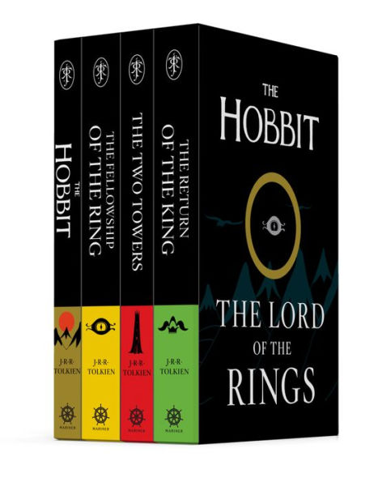

Shelby
I am a person of many hobbies. I love experimenting
with new ideas. However, some of my favorite hobbies are
writing and creating art. I love to tell stories through
many different methods, such as film and painting.
As much as I love to tell stories, I also love experiencing
new stories. I am an avid reader, and I choose to spend most of
my free time with a good book on hand. Some of my favorite books
are works of fantasy, such as The Lord of the Rings and
The Hobbit. These stories have heavily influenced
my own work.
